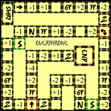

Free Small Games
MineSweeper
This is a python remake of the game MineSweeper.
 Download Here
Download Here
Physical Board Games
Overthrone Crusaders
Your main objective is to end the game with the greatest number of points. The youngest player will go first, and the oldest will go last. You will each take turns rolling a die. The number rolled on the die is the number of spaces you will move. After you move, preform the action on the space that you haven ended on, and then your turn is ended. One player will take the notepad or a piece of paper to keep the score, this person does not have to be a participant in the game.
 Buy HereOverthrone Ninja
Your main objective is to end the game with the greatest number of points. The youngest player will go first, and the oldest will go last. You will each take turns rolling a die. The number rolled on the die is the number of spaces you will move. After you move, preform the action on the space that you haven ended on, and then your turn is ended. One player will take the notepad or a piece of paper to keep the score, this person does not have to be a participant in the game.
Buy Here